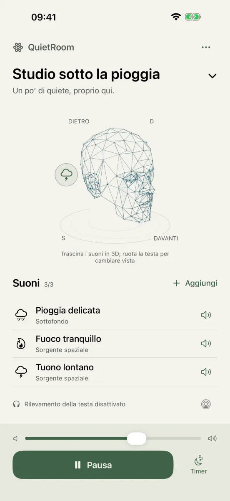
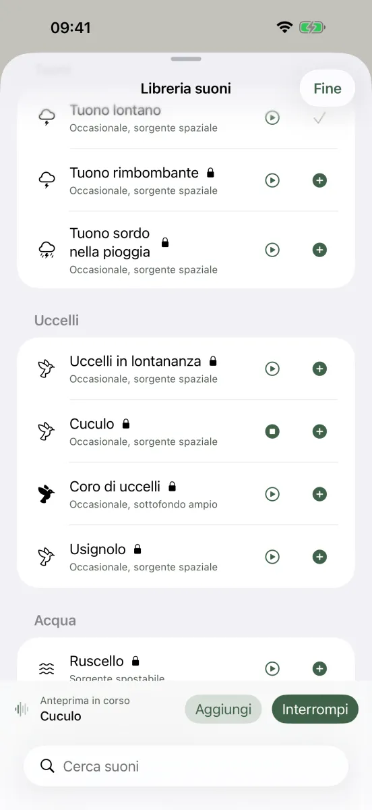
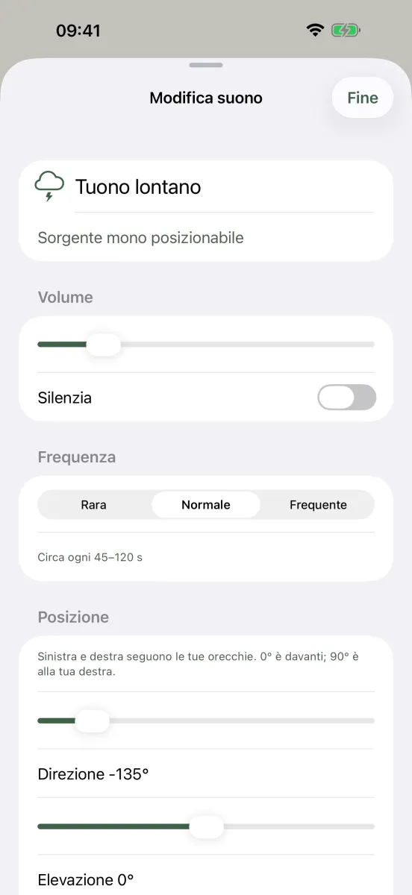
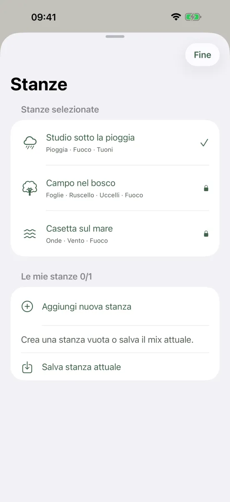

Suoni in uno spazio reale
Trascina ogni suono intorno a un ascoltatore 3D: a sinistra o a destra, davanti o dietro, sopra o sotto. Oppure imposta con precisione direzione, elevazione e distanza. I sottofondi ampi restano fermi intorno a te.
Per iPhone · iOS 18 o versioni successive
QuietRoom dispone i suoni della natura intorno a te: la pioggia sulla finestra alla tua sinistra, un ruscello davanti, un fuoco appena dietro. Indossa le cuffie, avvia l’ascolto e modella la stanza finché non ti sembra giusta.

Trascina ogni suono intorno a un ascoltatore 3D: a sinistra o a destra, davanti o dietro, sopra o sotto. Oppure imposta con precisione direzione, elevazione e distanza. I sottofondi ampi restano fermi intorno a te.
Pioggia, tuoni, uccelli, ruscelli, onde, vento, insetti, passi e fuoco. Le registrazioni variano in modo naturale, così la stanza non sembra mai un breve loop. Ascolta in anteprima qualsiasi suono, anche Pro, prima di aggiungerlo.
Tuoni, canti di uccelli, gocce e passi arrivano di tanto in tanto. Scegli Rara, Normale o Frequente per ciascuno. I passi possono anche diventare una camminata continua.
Parti da Studio sotto la pioggia, Campo nel bosco o Casetta sul mare, oppure inizia con una stanza vuota. Le modifiche si salvano automaticamente; rinomina, duplica o sostituisci le stanze salvate quando vuoi.
Con cuffie compatibili, i suoni spaziali restano al loro posto quando giri la testa. Le cuffie normali offrono comunque un suono spaziale fisso.
Nessun account, nessuna pubblicità, nessuna analisi. I suoni sono inclusi, quindi ascolto, modifica e salvataggio funzionano senza connessione. Un timer di spegnimento abbassa il volume con dolcezza.



Acquisto unico · nessun abbonamento
Il prezzo è indicato dall’App Store del tuo paese.